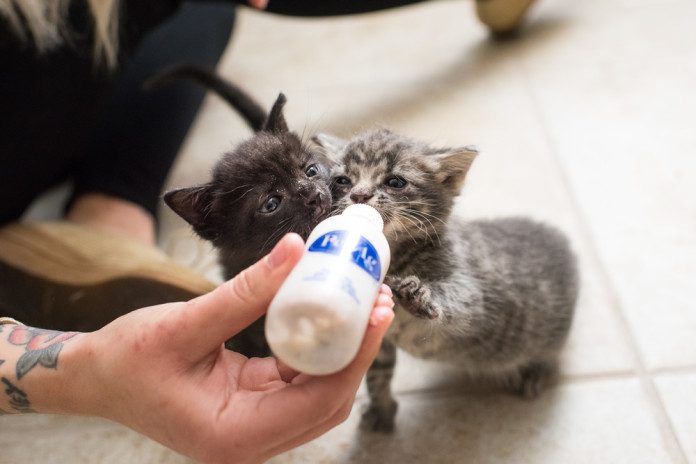
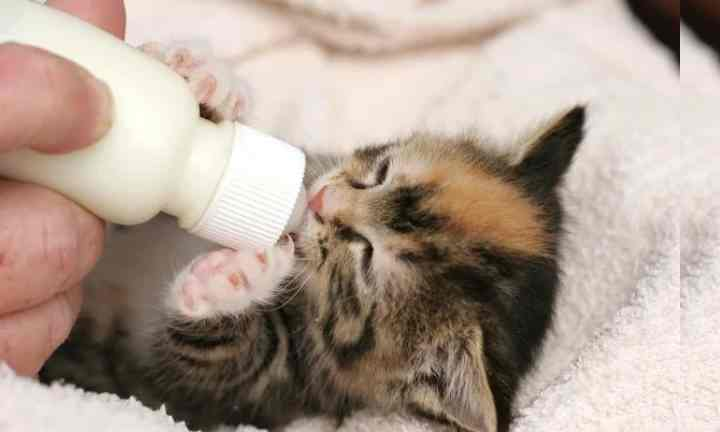
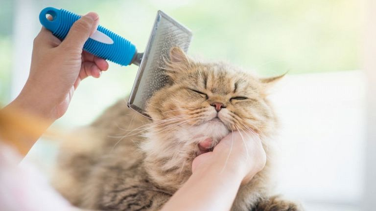

Переезд в новый дом сопряжен с отъемом от матери и сопометников. Поэтому первое время котенок будет испытывать сильный стресс и вести себя беспокойно, замкнуто или агрессивно. Поведение животного в непривычной среде обитания зависит от его темперамента и уровня социализации. Однако каким бы ни оказался характер питомца, ему нужна помощь и время на адаптацию.
Обратите внимание. Если в доме есть другие питомцы, знакомьте их с новым жителем через закрытую дверь или делайте обмен игрушками. Когда животные привыкнут к чужому запаху, враждебности при первой встрече в одном помещении не возникнет. Специалисты не рекомендуют разговаривать с малышом громким голосом и тем более гладить, вычесывать шерсть и знакомить с другими членами семьи в первые часы в новом доме. Вместо этого достаточно заходить в комнату по очереди с интервалом в один час, спокойно садиться на корточки и приманивать котенка игрушкой и угощением. Понять, что котенок готов выйти из изолированной комнаты, можно по языку его тела. Когда котенок осмелеет, то перестанет передвигаться на полусогнутых ногах, начнет ходить в туалет и проявит интерес к подвижным играм.
Чтобы наладить питание в новом доме, выбирайте продукты, которые знакомы кошке по ее жизни в питомнике или приюте. Прежний корм должен составлять основу рациона не менее двух недель. Иначе кошка столкнется с несварением и потерей аппетита. Но в дальнейшем его можно постепенно заменить на новый. Главное – вводить незнакомые продукты понемногу. Например, поделить разовую порцию на 7 долей, 6 из которых будет приходиться на привычный корм, а 1 – на новый, и увеличивать соотношение нового корма к старому в течение 1 недели, пока старый корм не исчезнет из миски полностью. Основные правила:
Уход за шерстью кошки должен быть регулярным и своевременным. Иначе питомец столкнется с дерматологическими проблемами и обильной сезонной линькой, которая растянется на несколько месяцев. Длинношерстных питомцев вычесывают не менее 2-3 раз в неделю. Короткошерстных – не менее 1 раза в неделю. Чтобы вычесать шерсть, не повредив новые волоски, пригодится пуходерка, железный гребень с редкими и частыми зубцами, резиновая перчатка для расчесывания шерсти и спрей-антистатик для животных. Приучить питомца к уходу за шерстью нужно еще в детстве. Позвольте малышу обнюхать инструменты, поиграйте рядом с игрушкой-дразнилкой, а затем проведите ими по голове и вдоль спины питомца. Первое вычесывание шерсти должно напоминать животному массаж и быть максимально приятным. В этом случае питомец сложит о процедуре положительную ассоциацию и будет принимать уход за шерстью охотнее.
